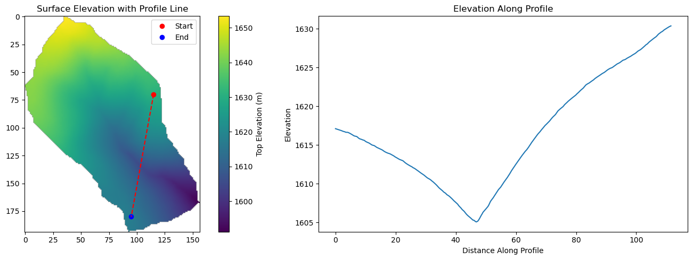
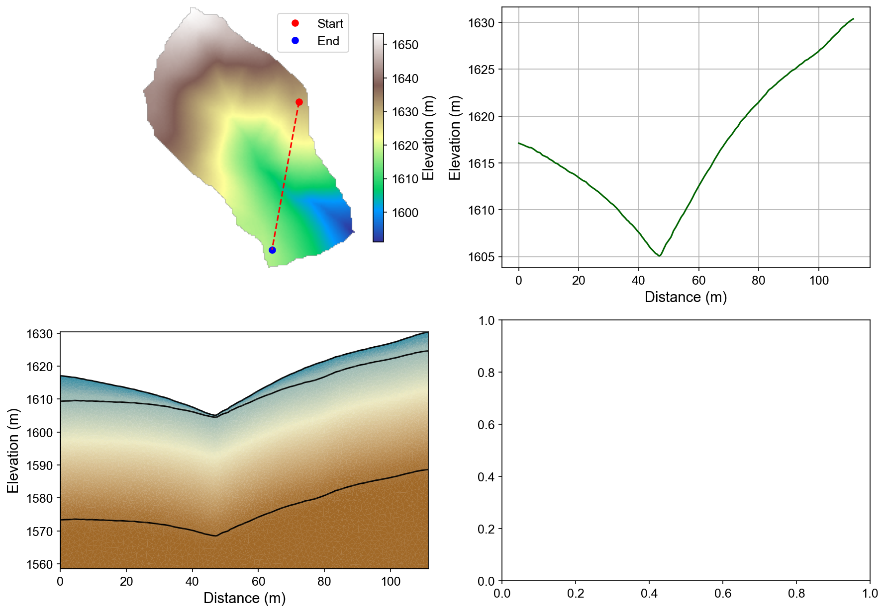
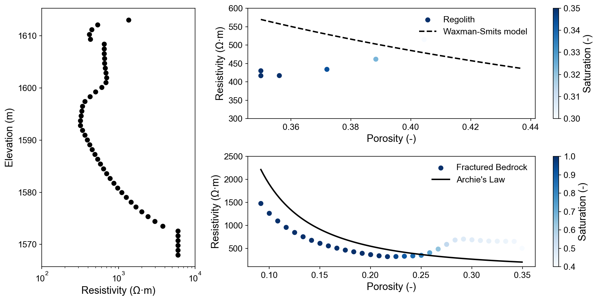
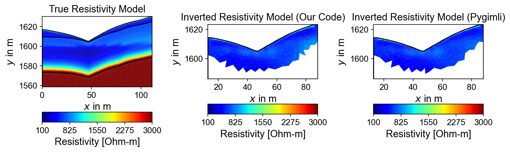
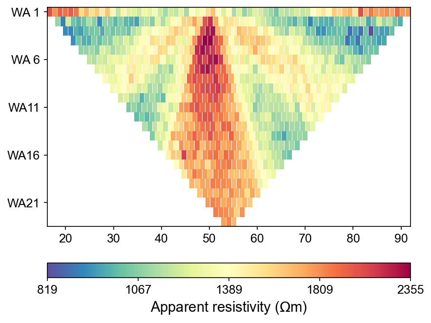

Note
Go to the end to download the full example code.
Ex. ERT Workflow: From Hydrological Models to ERT responses and Inversion
This example demonstrates the complete workflow for integrating hydrological model outputs with ERT forward modeling and inversion using PyHydroGeophysX.
The workflow includes: 1. Loading MODFLOW water contents data 2. Setting up 2D profile interpolation from 3D model data 3. Creating meshes with geological layer structure 4. Converting water content to resistivity using petrophysical relationships 5. Forward modeling to create synthetic ERT data 6. Performing ERT inversion to recover resistivity models
This example serves as a comprehensive tutorial showing the integration of hydrological and geophysical modeling for watershed monitoring applications.
import os
import sys
import numpy as np
import matplotlib.pyplot as plt
import pygimli as pg
from pygimli.physics import ert
from pygimli.physics import TravelTimeManager
import pygimli.physics.traveltime as tt
from mpl_toolkits.axes_grid1 import make_axes_locatable
# Setup package path for development
try:
# For regular Python scripts
current_dir = os.path.dirname(os.path.abspath(__file__))
except NameError:
# For Jupyter notebooks
current_dir = os.getcwd()
# Add the parent directory to Python path
parent_dir = os.path.dirname(current_dir)
if parent_dir not in sys.path:
sys.path.append(parent_dir)
# Import PyHydroGeophysX modules
from PyHydroGeophysX.core.interpolation import ProfileInterpolator, create_surface_lines
from PyHydroGeophysX.core.mesh_utils import MeshCreator
from PyHydroGeophysX.petrophysics.resistivity_models import WS_Model
from PyHydroGeophysX.petrophysics.velocity_models import HertzMindlinModel, DEMModel
from PyHydroGeophysX.forward.ert_forward import ERTForwardModeling
from PyHydroGeophysX.inversion.ert_inversion import ERTInversion
from PyHydroGeophysX.Hydro_modular import hydro_to_ert
output_dir = "results/workflow_example"
os.makedirs(output_dir, exist_ok=True)
# Step by Step approach
## Loading domain information…
These would be your actual data files
data_dir = "data/"
modflow_dir = os.path.join(data_dir, "modflow")
# Load domain information from files
# (Replace with your actual file paths)
idomain = np.loadtxt(os.path.join(data_dir, "id.txt"))
top = np.loadtxt(os.path.join(data_dir, "top.txt"))
porosity = np.load(os.path.join(data_dir, "Porosity.npy"))
## Loading MODFLOW water content data..
Step 2: Exmaple of loading MODFLOW water content data
# Note that to save the loading time, we only use a low resoluation model load for the example
# In a real-world application, you would load the full resolution data
# here we will load the npy file for the water content to save time
# Load the water content from a .npy file for demonstration purposes
Water_Content = np.load(os.path.join(data_dir, "Watercontent.npy"))
water_content = Water_Content[5] # in the publication, we used the 50th time step data
print(water_content.shape)
## Set up profile for 2D section
Step 3: Set up profile for 2D section
print("Step 3: Setting up profile...")
# Define profile endpoints
point1 = [115, 70] # [col, row]
point2 = [95, 180] # [col, row]
# Initialize profile interpolator
interpolator = ProfileInterpolator(
point1=point1,
point2=point2,
surface_data=top,
origin_x=569156.0,
origin_y=4842444.0,
pixel_width=1.0,
pixel_height=-1.0,
num_points = 400
)
## Interpolating data to profile
Step 4: Interpolate data to profile
# Interpolate water content to profile
water_content_profile = interpolator.interpolate_3d_data(water_content)
# Interpolate porosity to profile
porosity_profile = interpolator.interpolate_3d_data(porosity)
## Creating mesh
# Load structure layers
bot = np.load(os.path.join(data_dir, "bot.npy"))
# Process layers to get structure
structure = interpolator.interpolate_layer_data([top] + bot.tolist())
# Create surface lines
# Indicate the layer for the structure regolith, fractured bedrock and fresh bedrock
top_idx=int(0)
mid_idx=int(4)
bot_idx=int(13)
surface, line1, line2 = create_surface_lines(
L_profile=interpolator.L_profile,
structure=structure,
top_idx=top_idx,
mid_idx=mid_idx,
bot_idx=bot_idx
)
# Create mesh
mesh_creator = MeshCreator(quality=32)
mesh, geom = mesh_creator.create_from_layers(
surface=surface,
layers=[line1, line2],
bottom_depth= np.min(line2[:,1])-10 #50.0
)
# Save mesh
mesh.save(os.path.join(output_dir, "mesh.bms"))
Visualize the result
import matplotlib.pyplot as plt
plt.figure(figsize=(15, 5))
top[idomain==0] = np.nan # Mask out the inactive cells in the top layer
# Plot the surface and profile line
plt.subplot(121)
plt.imshow(top)
plt.colorbar(label='Top Elevation (m)')
plt.plot(point1[0], point1[1], 'ro', label='Start')
plt.plot(point2[0], point2[1], 'bo', label='End')
plt.plot([point1[0], point2[0]], [point1[1], point2[1]], 'r--')
plt.legend()
plt.title('Surface Elevation with Profile Line')
# Plot the profile coordinates
plt.subplot(122)
plt.plot(surface[:,0], surface[:,1])
plt.title('Elevation Along Profile')
plt.xlabel('Distance Along Profile')
plt.ylabel('Elevation')
plt.tight_layout()
plt.show()
Profile Setup and Topographic Analysis
Left panel shows the 3D MODFLOW domain with the selected 2D profile line (red dashed) connecting start (red) and end (blue) points. Right panel displays the extracted elevation profile that will guide mesh generation and geological structure definition.
{kind=link}

%% [markdown] ## Interpolating data to mesh
Step 6: Interpolate data to mesh
ID1 = porosity_profile.copy()
ID1[:mid_idx] = 0 #regolith
ID1[mid_idx:bot_idx] = 3 # fractured bedrock
ID1[bot_idx:] = 2 # fresh bedrock
# Get mesh centers and markers
mesh_centers = np.array(mesh.cellCenters())
mesh_markers = np.array(mesh.cellMarkers())
# marker labels for the layers
marker_labels = [0, 3, 2] # top. mid, bottom layers (example values)
# assign the values for the regolith and fractured bedrock
ID1 = porosity_profile.copy()
ID1[:mid_idx] = marker_labels[0] #regolith
ID1[mid_idx:] = marker_labels[1] # fractured bedrock
# Get mesh centers and markers
mesh_centers = np.array(mesh.cellCenters())
mesh_markers = np.array(mesh.cellMarkers())
porosity_mesh = np.zeros_like(mesh_markers, dtype=float)
wc_mesh = np.zeros_like(mesh_markers, dtype=float)
for i in range(len(marker_labels)):
if i == 2:
# assign the values for the fresh bedrock, since fresh bedrock is no flux boundary and assume the homogeneous as the last layer
ID1[bot_idx] = marker_labels[2] # fractured bedrock # fresh bedrock
# Interpolate porosity to mesh
porosity_temp = interpolator.interpolate_to_mesh(
property_values=porosity_profile,
depth_values=structure,
mesh_x=mesh_centers[:, 0],
mesh_y=mesh_centers[:, 1],
mesh_markers=mesh_markers,
ID=ID1, # Use ID1 to indicate the layers for interpolation
layer_markers = [marker_labels[i]],
)
porosity_mesh[mesh_markers==marker_labels[i]] = porosity_temp[mesh_markers==marker_labels[i]]
# Interpolate water content to mesh
wc_temp = interpolator.interpolate_to_mesh(
property_values=water_content_profile,
depth_values=structure,
mesh_x=mesh_centers[:, 0],
mesh_y=mesh_centers[:, 1],
mesh_markers=mesh_markers,
ID=ID1, # Use ID1 to indicate the layers for interpolation
layer_markers = [marker_labels[i]],
)
wc_mesh[mesh_markers==marker_labels[i]] = wc_temp[mesh_markers==marker_labels[i]]
saturation = wc_mesh / porosity_mesh
import matplotlib.pyplot as plt
import matplotlib as mpl
import numpy as np
import pygimli as pg
from palettable.cartocolors.diverging import Earth_7
# Font settings for publication
mpl.rcParams['font.family'] = 'Arial'
mpl.rcParams['font.size'] = 12
mpl.rcParams['axes.labelsize'] = 14
mpl.rcParams['axes.titlesize'] = 14
mpl.rcParams['xtick.labelsize'] = 12
mpl.rcParams['ytick.labelsize'] = 12
mpl.rcParams['legend.fontsize'] = 12
mpl.rcParams['figure.dpi'] = 150
# Preprocessing
top_masked = np.copy(top)
top_masked[idomain == 0] = np.nan
saturation = wc_mesh / porosity_mesh
ctcolor = Earth_7.mpl_colormap
# Create 2x2 figure
fig, axs = plt.subplots(2, 2, figsize=(14, 10))
# --- Top Left: Surface elevation map ---
im0 = axs[0, 0].imshow(top_masked, origin='lower', cmap='terrain')
axs[0, 0].invert_yaxis()
# Plot profile line and points
axs[0, 0].plot(point1[0], point1[1], 'ro', label='Start')
axs[0, 0].plot(point2[0], point2[1], 'bo', label='End')
axs[0, 0].plot([point1[0], point2[0]], [point1[1], point2[1]], 'r--')
# Remove ticks and axis borders
axs[0, 0].set_xticks([])
axs[0, 0].set_yticks([])
for spine in axs[0, 0].spines.values():
spine.set_visible(False)
# Title and colorbar
cbar0 = fig.colorbar(im0, ax=axs[0, 0], orientation='vertical', shrink=0.8)
cbar0.set_label('Elevation (m)')
axs[0, 0].legend(loc='upper right')
# --- Top Right: Elevation profile ---
axs[0, 1].plot(surface[:, 0], surface[:, 1], color='darkgreen')
axs[0, 1].set_xlabel('Distance (m)')
axs[0, 1].set_ylabel('Elevation (m)')
axs[0, 1].grid(True)
# --- Bottom Left: Porosity mesh ---
pg.show(mesh, porosity_mesh,
ax=axs[1, 0], orientation="vertical", cMap=ctcolor,
cMin=0.05, cMax=0.45,
xlabel="Distance (m)", ylabel="Elevation (m)",
label='Porosity (-)', showColorBar=True)
# --- Bottom Right: Saturation mesh ---
pg.show(mesh, saturation,
ax=axs[1, 1], orientation="vertical", cMap='Blues',
cMin=0, cMax=1,
xlabel="Distance (m)", ylabel="Elevation (m)",
label='Saturation (-)', showColorBar=True)
# Layout adjustment
plt.tight_layout(pad=3)
plt.savefig(os.path.join(output_dir, "topography_and_properties.tiff"), dpi=300)
Mesh Properties and Interpolation Results
Four-panel analysis showing: (1) surface elevation map with profile line, (2) elevation profile, (3) interpolated porosity field with three-layer structure, and (4) saturation distribution. The mesh preserves geological boundaries while providing appropriate resolution for ERT modeling.
{kind=link}

%%
print("Water Content min/max:", np.min(wc_mesh), np.max(wc_mesh))
print("Saturation min/max:", np.min(saturation), np.max(saturation))
## Calculating saturation
Ensure porosity is not zero to avoid division by zero
saturation = np.clip(wc_mesh / porosity_mesh, 0.0, 1.0)
## Converting to resistivity
Convert to resistivity using petrophysical model
marker_labels = [0, 3, 2] # top. mid, bottom layers (example values)
sigma_w = [1/20,1/20,1/20] # Conductivity of water in S/m (example value)
m = [1.2, 1.8, 1.9] # Cementation exponent for each layer (example values)
n = [2.2, 1.8, 2.5] # Saturation exponent for each layer (example values)
sigma_s = [1/100, 0, 0] # Saturated resistivity of the surface conductivity see Chen & Niu, (2022) for each layer (example values)
# Convert water content back to resistivity
res_models = np.zeros_like(wc_mesh) # Initialize an array for resistivity values
mask = (mesh_markers == marker_labels[0])
top_res = WS_Model(
saturation[mask], # Water content values for this layer
porosity_mesh[mask], # Porosity values for this layer
sigma_w[0], # Conductivity of water in S/m
m[0], # Cementation exponent for this layer
n[0], # Saturation exponent for this layer
sigma_s[0] # Use a scalar value
)
res_models[mask] = top_res
mask = (mesh_markers == marker_labels[1])
mid_res = WS_Model(
saturation[mask], # Water content values for this layer
porosity_mesh[mask], # Porosity values for this layer
sigma_w[1], # Conductivity of water in S/m
m[1], # Cementation exponent for this layer
n[1], # Saturation exponent for this layer
sigma_s[1] # Use a scalar value
)
res_models[mask] = mid_res
mask = (mesh_markers == marker_labels[2])
bot_res = WS_Model(
saturation[mask], # Water content values for this layer
porosity_mesh[mask], # Porosity values for this layer
sigma_w[2], # Conductivity of water in S/m
m[2], # Cementation exponent for this layer
n[2], # Saturation exponent for this layer
sigma_s[2] # Use a scalar value
)
res_models[mask] = bot_res
import matplotlib.pyplot as plt
import numpy as np
from scipy.interpolate import griddata
plt.figure(figsize=(12, 6))
# First subplot - narrower left side (spans both rows, 1 column)
plt.subplot2grid((2, 3), (0, 0), rowspan=2, colspan=1)
x1, y1 = np.mgrid[20:21:1j, 1568:1613:50j]
res = griddata(mesh_centers[:,0:2], res_models, (x1, y1), method='linear')
po = griddata(mesh_centers[:,0:2], porosity_mesh, (x1, y1), method='linear')
sat = griddata(mesh_centers[:,0:2], saturation, (x1, y1), method='linear')
wc = griddata(mesh_centers[:,0:2], wc_mesh, (x1, y1), method='linear')
# Plotting the first interpolation
plt.scatter(res.ravel(), y1.ravel(),c='k')
plt.xlabel('Resistivity (Ω·m)')
plt.ylabel('Elevation (m)')
plt.xscale('log')
plt.xlim([100,10000])
# Second subplot - larger top right position (spans 2 columns)
plt.subplot2grid((2, 3), (0, 1), colspan=2)
# First interpolation for the main plot
x1, y1 = np.mgrid[20:21:1j, 1609.2:1613:8j]
res = griddata(mesh_centers[:,0:2], res_models, (x1, y1), method='linear')
po = griddata(mesh_centers[:,0:2], porosity_mesh, (x1, y1), method='linear')
sat = griddata(mesh_centers[:,0:2], saturation, (x1, y1), method='linear')
wc = griddata(mesh_centers[:,0:2], wc_mesh, (x1, y1), method='linear')
# Plotting the first interpolation
plt.scatter(po.ravel(), res.ravel(), c=sat, vmin=0.3, vmax=0.35, cmap='Blues',label='Regolith')
plt.colorbar(label='Saturation (-)')
plt.xlabel('Porosity (-)')
plt.ylabel('Resistivity (Ω·m)')
res0 = WS_Model(
np.ones(100)*np.mean(sat), # Water content values for this layer
np.linspace(np.nanmin(po.ravel()), np.nanmax(po.ravel()), 100), # Porosity values for this layer
sigma_w[0], # Conductivity of water in S/m
m[0], # Cementation exponent for this layer
n[0], # Saturation exponent for this layer
sigma_s[0] # Use a scalar value
)
plt.plot(np.linspace(np.nanmin(po.ravel()), np.nanmax(po.ravel()), 100), res0, 'k--', lw=2,label = "Waxman-Smits model")
plt.ylim([300,600])
plt.legend(frameon=False)
# Third subplot - larger bottom right position (spans 2 columns)
plt.subplot2grid((2, 3), (1, 1), colspan=2)
# First interpolation for the main plot
x1, y1 = np.mgrid[20:21:1j, 1578:1609:32j]
res = griddata(mesh_centers[:,0:2], res_models, (x1, y1), method='linear')
po = griddata(mesh_centers[:,0:2], porosity_mesh, (x1, y1), method='linear')
sat = griddata(mesh_centers[:,0:2], saturation, (x1, y1), method='linear')
wc = griddata(mesh_centers[:,0:2], wc_mesh, (x1, y1), method='linear')
# Plotting the first interpolation
plt.scatter(po.ravel(), res.ravel(), c=sat, cmap='Blues', vmin=0.4, vmax=1,label='Fractured Bedrock')
plt.colorbar(label='Saturation (-)')
plt.xlabel('Porosity (-)')
plt.ylabel('Resistivity (Ω·m)')
res0 = WS_Model(
np.ones(100)*np.nanmean(sat), # Water content values for this layer
np.linspace(np.nanmin(po.ravel()), np.nanmax(po.ravel()), 100), # Porosity values for this layer
sigma_w[1], # Conductivity of water in S/m
m[1], # Cementation exponent for this layer
n[1], # Saturation exponent for this layer
sigma_s[1] # Use a scalar value
)
plt.plot(np.linspace(np.nanmin(po.ravel()), np.nanmax(po.ravel()), 100), res0, 'k', lw=2,label = "Archie's Law")
plt.legend(frameon=False)
plt.ylim([100,2500])
# plt.yscale('log')
plt.tight_layout()
plt.savefig(os.path.join(output_dir, "resistivity_porosity_saturation.tiff"), dpi=300)
Petrophysical Relationship Validation
Multi-panel analysis validates rock physics models: vertical resistivity profile (left), Waxman-Smits model for regolith (top right), and Archie’s law for fractured bedrock (bottom right). Scattered data points match theoretical curves, confirming realistic petrophysical transformations.
{kind=link}

%% [markdown] ## ERT forward modeling simulation
xpos = np.linspace(15,15+72 - 1,72)
ypos = np.interp(xpos,interpolator.L_profile,interpolator.surface_profile)
pos = np.hstack((xpos.reshape(-1,1),ypos.reshape(-1,1)))
schemeert = ert.createData(elecs=pos,schemeName='wa')
# Step 10: Forward modeling to create synthetic ERT data
mesh.setCellMarkers(np.ones(mesh.cellCount())*2)
grid = pg.meshtools.appendTriangleBoundary(mesh, marker=1,
xbound=100, ybound=100)
fwd_operator = ERTForwardModeling(mesh=grid, data=schemeert)
synth_data = schemeert.copy()
fob = ert.ERTModelling()
fob.setData(schemeert)
fob.setMesh(grid)
dr = fob.response(res_models)
dr *= 1. + pg.randn(dr.size()) * 0.05
ert_manager = ert.ERTManager(synth_data)
synth_data['rhoa'] = dr
synth_data['err'] = ert_manager.estimateError(synth_data, absoluteUError=0.0, relativeError=0.05)
#ert.showData(synth_data, logscale=True)
synth_data.save(os.path.join(output_dir, "synthetic_data.dat"))
from palettable.lightbartlein.diverging import BlueDarkRed18_18
import matplotlib.pyplot as plt
fixed_cmap = BlueDarkRed18_18.mpl_colormap
# --- Create figure with 1 row, 2 columns ---
fig, axs = plt.subplots(1, 2, figsize=(12, 4))
# --- Left subplot (121): Resistivity with log scale ---
pg.show(mesh, res_models, ax=axs[0], orientation="horizontal",
cMap=fixed_cmap, logScale=True, showColorBar=True,
xlabel="Distance (m)", ylabel="Elevation (m)",
label='Resistivity (Ω·m)', cMin=100, cMax=2000)
pg.viewer.mpl.drawSensors(axs[0], schemeert.sensors(), diam=1,
facecolor='black', edgecolor='black')
# --- Right subplot (122): ERT data ---
ax_ert, cbar_default = ert.showData(synth_data, logscale=False, ax=axs[1], cMin=200, cMax=1000, cMap='jet', label='Apparent Resistivity (Ω·m)'
)
axs[1].set_xlabel("Distance (m)")
axs[1].spines['top'].set_visible(False)
axs[1].spines['right'].set_visible(False)
# Optional: Adjust spacing between subplots
plt.tight_layout()
plt.show()
plt.savefig(os.path.join(output_dir, "res_model_and_synth_data.tiff"), dpi=300)
Forward Modeling Results
Left panel shows the true resistivity model with electrode positions (black circles) along the surface. Right panel displays synthetic ERT measurements showing characteristic pseudosection patterns that reflect the three-layer geological structure in the apparent resistivity data.

%% Step 11: Run ERT inversion on synthetic data
## using my code to the inversion
print("Step 11: Running ERT inversion...")
# Create ERT inversion object
inversion = ERTInversion(
data_file=os.path.join(output_dir, "synthetic_data.dat"),
lambda_val=10.0,
method="cgls",
use_gpu=True,
max_iterations=10,
lambda_rate= 1.0
)
inversion_result = inversion.run()
# Using Pygimili default to the inversion
mgr = ert.ERTManager(os.path.join(output_dir, "synthetic_data.dat"))
inv = mgr.invert(lam=10, verbose=True,quality=34)
fig, axes = plt.subplots(1, 3, figsize=(10, 12))
# True resistivity model
ax1 = axes[0]
cbar1 = pg.show(mesh, res_models, ax=ax1, cMap='jet', logScale=False,
cMin=100, cMax=3000, label='Resistivity [Ohm-m]')
ax1.set_title("True Resistivity Model")
# Inverted model
ax2 = axes[1]
cbar2 = pg.show(inversion_result.mesh, inversion_result.final_model, ax=ax2, cMap='jet', logScale=False,
cMin=100, cMax=3000, label='Resistivity [Ohm-m]',coverage=inversion_result.coverage>-1)
ax2.set_title("Inverted Resistivity Model (Our Code)")
ax3 = axes[2]
cbar2 = pg.show(mgr.paraDomain, mgr.paraModel(), ax=ax3, cMap='jet', logScale=False,
cMin=100, cMax=3000, label='Resistivity [Ohm-m]',coverage=mgr.coverage()>-1)
ax3.set_title("Inverted Resistivity Model (Pygimli)")
# Adjust layout
plt.tight_layout()
Inversion Results Comparison
Three-panel comparison showing: (1) true resistivity model from petrophysical conversion, (2) PyHydroGeophysX inversion result, and (3) PyGIMLi standard inversion. Both methods successfully recover the main geological features, validating the complete hydro-to-geophysical workflow.
{kind=link}

# The inversion results are almost same from this code and Pygimli default inversion.
# the difference is that the chi2 value for stop inversion is not the same, we chose 1.5 while Pygimli is 1.0
# One step approach
## ERT one step from HM to GM
Set up directories
output_dir = "results/hydro_to_ert_example"
os.makedirs(output_dir, exist_ok=True)
# Load your data
data_dir = "data/"
idomain = np.loadtxt(os.path.join(data_dir, "id.txt"))
top = np.loadtxt(os.path.join(data_dir, "top.txt"))
porosity = np.load(os.path.join(data_dir, "Porosity.npy"))
water_content = np.load(os.path.join(data_dir, "Watercontent.npy"))[5] # Time step 50
# Set up profile
point1 = [115, 70]
point2 = [95, 180]
interpolator = ProfileInterpolator(
point1=point1,
point2=point2,
surface_data=top,
origin_x=569156.0,
origin_y=4842444.0,
pixel_width=1.0,
pixel_height=-1.0,
num_points=400
)
# Create mesh structure
bot = np.load(os.path.join(data_dir, "bot.npy"))
layer_idx = [0, 4, 12] # Example indices for top, middle, and bottom layers
structure = interpolator.interpolate_layer_data([top] + bot.tolist())
surface, line1, line2 = create_surface_lines(
L_profile=interpolator.L_profile,
structure=structure,
top_idx=layer_idx[0],
mid_idx=layer_idx[1],
bot_idx=layer_idx[2]
)
# Create mesh
mesh_creator = MeshCreator(quality=32)
mesh, geom = mesh_creator.create_from_layers(
surface=surface,
layers=[line1, line2],
bottom_depth=np.min(line2[:,1])-10
)
# Define layer markers
marker_labels = [0, 3, 2] # top, middle, bottom layers
# Define resistivity parameters for each layer
rho_parameters = {
'rho_sat': [100, 500, 2400], # Saturated resistivity for each layer (Ohm-m)
'n': [2.2, 1.8, 2.5], # Cementation exponent for each layer
'sigma_s': [1/500, 0, 0] # Surface conductivity for each layer (S/m)
}
mesh_markers = np.array(mesh.cellMarkers())
# Generate ERT response directly
synth_data, res_model = hydro_to_ert(
water_content=water_content,
porosity=porosity,
mesh=mesh,
mesh_markers = mesh_markers,
profile_interpolator=interpolator,
layer_idx=layer_idx,
structure = structure,
marker_labels=marker_labels,
rho_parameters=rho_parameters,
electrode_spacing=1.0,
electrode_start=15,
num_electrodes=72,
scheme_name='wa',
noise_level=0.05,
abs_error=0.0,
rel_error=0.05,
save_path=os.path.join(output_dir, "synthetic_ert_data.dat"),
verbose=True,
seed=42,
)
ert.showData(synth_data, logscale=True)
One-Step Integrated Workflow Results
The streamlined hydro-to-ERT workflow produces synthetic apparent resistivity data directly from MODFLOW outputs. This integrated approach demonstrates automated processing from hydrological model results to geophysical measurements suitable for inversion and interpretation.
{kind=link}

Summary
This comprehensive workflow demonstrated the complete integration from hydrological models to ERT responses and inversion. Key achievements include realistic petrophysical transformations, successful forward modeling, and validated inversion results suitable for watershed monitoring applications.